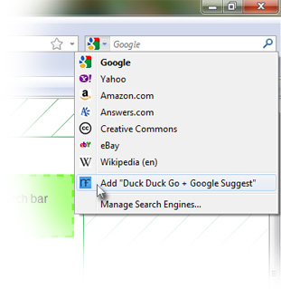
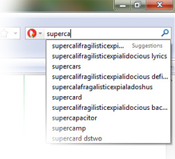

Duck Duck Go + Google Suggest Search Plugin
This page allows you to add a Duck Duck Go search option to your web browser's built in search bar that uses Google's suggestions to complete searches (and answer math problems).
- One-click install for most modern browsers
- FireFox
- Internet Explorer
- Chrome
- Opera
- How to use it
- Source Code & Credits
One-click Install
Click one of the options below to install your preferred plugin. This works in most browsers, most of the time. If it fails, try a manual install.
Direct
Your keywords are sent straight to Google for suggestions and your searches are preformed on Duck Duck Go.
This is the fastest method.
Install DirectProxied
Your keywords are proxied through ddgg.nfriedly.com to to restore the !bangs that google strips from the suggestions.
This is the most functional method.
Install ProxiedEncrypted
Your keywords go straight to Google for suggestions via HTTPS and your searches are preformed on Duck Duck Go via HTTPS.
This is the most secure method.
Install EncryptedIt looks like you're in Chrome.
To make Duck Duck Go + Google the default search engine:
- Click the wrench icon () and choose Preferences.
- In the Basics section, click Manage Search Engines...
- Hover over "Duck Duck Go + Google Suggest" at the bottom of the list, select it, and click Make Default.
How to install in FireFox 2+
- In FireFox you should have a search bar at the top with a down arrow. Click it.
- There will be an option that says Add "Duck Duck Go + Google Suggest". Click that.
How to install in Internet Explorer 7+

In Internet Explorer it's almost as easy as FireFox.
- Click the down arrow beside the search box.
- IE fakes you out and pretends that it's already installed.
Ignore the first "Duck Duck Go + Google Suggest" and instead go to the Add Search Providers option. - Another "Duck Duck Go + Google Search" should pop out of the side, click on that one.
How to install in Chrome
Unfortunately, the manual method of installing a search engine in Chrome does not allow the user to specify a suggestions URL. If the one-click method does not work, there was a suggestion of installing it in FireFox and then importing search settings into Chrome.
How to install in Opera 10.60+
Opera does not seem to allow automated installs, but it does support a manual install. Instructions adapted from http://my.opera.com/Tamil/blog/google-search-suggestions-in-opera?cid=34651402
- Create a "regular" Duck Duck Go search.
- Go to Prefferences (
CTRL+F12) > Search - Click Add...
Name: Keyword: Address: Query string: (Leave blank) Use as default: (Optional, recommended) Use as Speed Dial search engine: (Optional, recommended)
- Go to Prefferences (
- Close Opera. You'll probably want to open these instructions in another browser.
- Open
search.inifile from your Opera profile directory directory in any text editor. - At the end of Duck Duck Go + Google Suggest search engine add the following code and save:
Suggest Protocol=JSON Suggest URL=http://ddgg.nfriedly.com/complete/search?json&q={SearchTerm}Change the URL in the second line to https://encrypted.google.com or http://suggestqueries.google.com for encrypted or direct methods.
After adding the code, it should look like this:
[Search Engine X] UNIQUEID=XXXXXXXXXXXXXXXXXXXXXXXXXXXXXXXX Name=Duck Duck Go + Google Suggest Verbtext=0 URL=http://duckduckgo.com/?q=%s Query= Key=ddg Is post=0 UseTLD=0 Has endseparator=0 Encoding=iso-8859-15 Search Type=0 Position=-1 Nameid=0 Deleted=0 Suggest Protocol=JSON Suggest URL=http://ddgg.nfriedly.com/complete/search?json&q={SearchTerm} - Restart Opera.
How to use it
As you type, your browser will query google for suggested keywords and offer to "complete" your search. Or, if you type in a math problem, it will suggest the answer instead. When you press [enter] or click the search button, the search will be performed on Duck Duck Go.
Hint: if your math problem doesn't get an answer try alternately adding / removing the = from the end.
Enjoy!
-Nathan
Source Code & Credits

The source code and associated configurations for the proxy is available on github. If you are at all concerned about the privacy, I encourage you to set up your own server. This one is hosted on prgmr.com
The encrypted version was contributed by Eli Grey.
Everything else here was built by Nathan Friedly with node.js and nginx.
This website is not affiliated with either Duck Duck Go or Google.